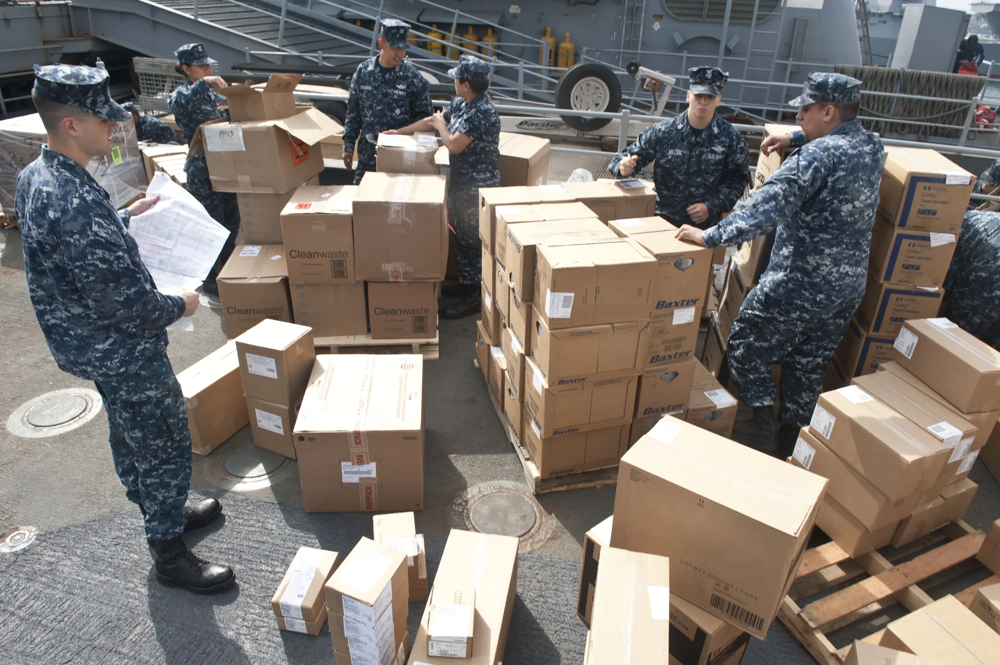

This guide provides professional buyers with essential insights into sourcing J-Cain Numbing Cream 15.6% wholesale, covering documentation, handling, and shipping.
When sourcing J-Cain Numbing Cream 15.6% wholesale, professional buyers face unique challenges. The need for reliable suppliers, accurate documentation, and efficient logistics can make or break a procurement strategy. Understanding these elements is crucial for clinics, spas, resellers, and distributors aiming to maintain a competitive edge in a market where quality and compliance are paramount.
This guide will walk you through the essentials of buying J-Cain Numbing Cream 15.6% wholesale, focusing on the key aspects of documentation, handling, and shipping. By addressing these areas, you can streamline your purchasing process and ensure that your business remains compliant and well-stocked, ultimately enhancing your service offerings and customer satisfaction.
Key Takeaways
- Understand the importance of accurate documentation for compliance and smooth transactions.
- Evaluate suppliers based on their communication and reliability to ensure timely deliveries.
- Consider the packaging and batch visibility to maintain product integrity.
- Plan your orders based on minimum order quantities (MOQ) to optimize inventory management.
- Utilize a checklist to streamline your quote requests and avoid common pitfalls.
What this guide covers
- Understanding J-Cain Numbing Cream 15.6%
- Buyer scenarios and order planning
- Comparison criteria for suppliers
- Checklist before requesting a quote
- Shipping, packing, and documentation essentials
- MOQ, quotation, and reorder planning
- Frequently asked questions
What buyers should understand first

J-Cain Numbing Cream 15.6% is a topical anesthetic designed to minimize pain during various procedures, making it essential for clinics and spas that provide cosmetic or medical treatments. As a professional buyer, it’s important to understand the product's formulation, its intended use, and the regulatory requirements that may apply in your region. This knowledge ensures that you source a product that meets both your business needs and compliance standards. Additionally, being informed about the potential side effects and contraindications can help you better serve your clients and manage their expectations.
Which buyers is this most relevant for?
This guide is particularly relevant for clinics, spas, resellers, and distributors who require J-Cain Numbing Cream 15.6% for their operations. Each of these buyer types has unique order planning needs. For instance, clinics may need to maintain a steady supply for patient procedures, while resellers might focus on bulk purchasing to optimize their profit margins. Distributors, on the other hand, need to ensure they have reliable sources to meet the demands of their clients. Understanding these different scenarios will help you tailor your sourcing strategy effectively, ensuring that you can meet your business's operational requirements without interruption.
How to compare options before ordering
When comparing options for J-Cain Numbing Cream 15.6%, consider the following criteria:
- Product Type: Ensure you are sourcing the correct formulation and strength that aligns with your needs.
- Brand: Some brands may have a better reputation for quality and effectiveness, which can impact customer satisfaction.
- Packaging: Evaluate the packaging options to ensure they meet your storage and handling needs, especially if you have limited space.
- Batch/Expiry Visibility: Check if the supplier provides clear information on batch numbers and expiration dates to maintain product integrity.
- Supplier Communication: Assess how responsive and informative the supplier is during the inquiry process, as good communication can prevent future issues.
- Destination Requirements: Confirm that the supplier can meet your logistical needs based on your location and any specific import regulations.
Buyer checklist before requesting a quote


- Identify your required quantity and any specific variants, such as packaging size.
- Confirm your local regulations regarding the product to ensure compliance.
- Gather documentation needed for compliance, including any licenses or permits.
- Prepare questions regarding shipping, handling, and lead times.
- Check the supplier’s MOQ and pricing structure to ensure it fits your budget.
- Evaluate your budget and payment options, including any potential discounts for bulk orders.
Shipping, packing and documentation questions
Logistics play a critical role in sourcing J-Cain Numbing Cream 15.6%. Here are some common questions to consider:
- What are the shipping options available, and how do they affect delivery times and costs?
- How is the product packaged to ensure it arrives safely and in good condition?
- What documentation will be required for customs clearance, and who is responsible for providing it?
- How can you track your shipment once it has been dispatched, and what tracking systems are in place?
- What are the supplier’s policies on damaged or lost shipments, and how can you resolve issues quickly?
MOQ, quotation and reorder planning
When preparing to place an order for J-Cain Numbing Cream 15.6%, it’s essential to consider your MOQ and how it aligns with your business needs. Determine the quantity you will need based on your sales forecasts and patient demand. Additionally, keep track of your reorder points to avoid stockouts. SOLA can assist you in confirming current availability and providing a wholesale quotation tailored to your needs, ensuring you have the right amount of product on hand when you need it.
FAQ
What is the typical MOQ for J-Cain Numbing Cream 15.6%?
The typical MOQ can vary by supplier, so it’s important to confirm this during your initial inquiries to avoid any surprises.
How can I ensure the quality of the product?
Request batch testing results and certifications from your supplier to verify product quality and compliance with industry standards.
What should I do if I receive damaged goods?
Contact your supplier immediately to report the issue and inquire about their return policy, ensuring you document any damages for reference.
Are there any specific shipping requirements for this product?
Check with your supplier regarding any special handling or shipping requirements to ensure compliance with local regulations and safety standards.
How often should I reorder to maintain stock levels?
Monitor your sales and patient demand to determine the best reorder frequency for your business, taking into account lead times from suppliers.
Contact SOLA for wholesale quotation via WhatsApp.
Planning a wholesale request?
Send product names, quantities and destination for a tailored discussion.
Contact SOLA on WhatsApp →General educational content for professional buyers. Not medical, legal, regulatory or import advice.
Image sources: U.S. Sailors conduct an inventory of medical supplies aboard the amphibious dock landing ship USS Pearl Harbor (LSD 52) at Naval Base San Diego May 9, 2013, in preparation for Pacific Partnership 2013 130509-N-SK590-470.jpg by MC3 Tim D. Godbee (Public domain, 4256x2832 px); Balikatan 25- U S , Philippine forces construct multi-purpose warehouse, prepare medical supplies to local community (8962079).jpg by U.S. Marine Corps photo by Lance Cpl. Roger Annoh (Public domain, 7103x4738 px).